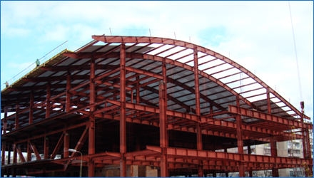
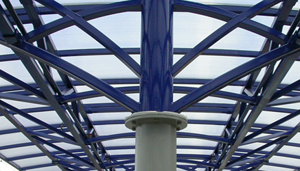
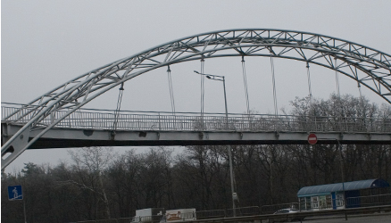

STEEL WORK GROUP
Проектирование
Изготовление
Монтаж
Наши работы
Все работы//
Полный цыкл поддержки проекта стадиона
Проектирование/Изготовление/Монтаж

Монтаж и установка конструкции и стадиона для событий фестиваля уличной еды
Монтаж

Конструкции для железнодорожных вокзалов
Изготовление/Монтаж

Проект моста через трассы
Проектирование / Изготовление / Монтаж
1
2
3
4
5
6
7